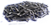
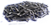
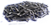

Aktiviti 5: Sesuai atau tidak?
Lihat gambar di bawah dan pilih barang yang tidak patut berada di dalam gambar.
Markah terkumpul setakat ini
 

Lihat gambar di bawah dan pilih barang yang tidak patut berada di dalam gambar.
Markah terkumpul setakat ini
